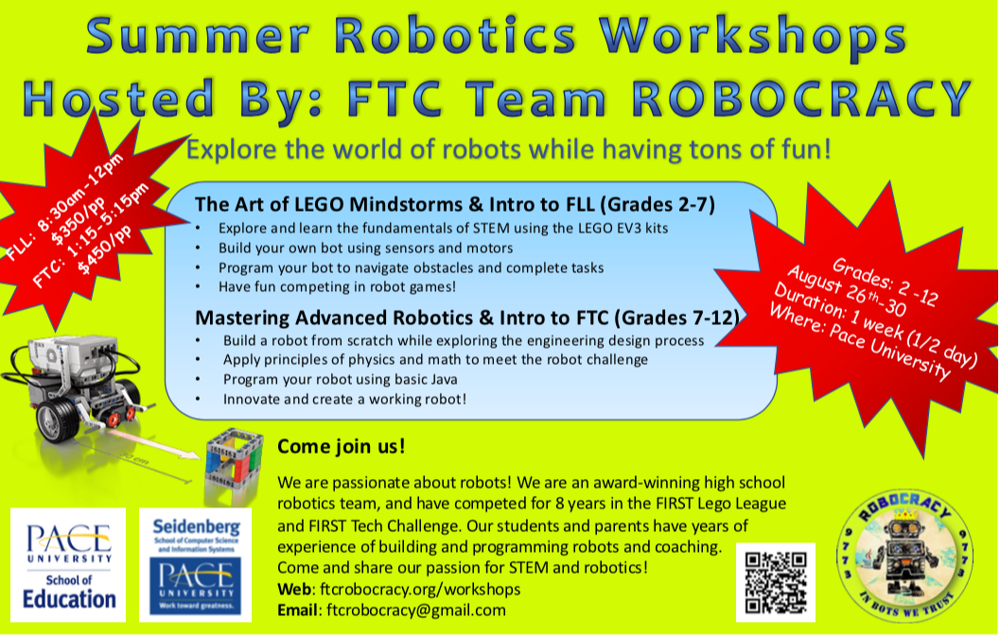

|
| |
|  |
For the younger kids (2-7th grades), we will offer a week of robotics fun based on the LEGO Mindstorms. We use a game-based approach to teach solid robotics foundations, engaging kids to build robots for many fun missions and teaching visual-programming skills to control the robots. Children will use motors and sensors to perform robotic tasks, such as follow a line, detect other robots, knock down balls, and more. We will introduce many STEM concepts relevant to robotics, such as gear ratios, speed/power trade-offs, center of gravity, and PID control systems. Many children who participate in this robotics workshop, join a team themselves and we will do our best to help parents find a suitable team for any interested child.
Our advanced robotics workshop for 7-12th graders. Participants will build larger robots using aluminum structural parts, powerful motors, servos and their own creativity. Using a kit, students will build an 18” by 18” robot of their own design to perform a competitive game played by 2 or more robots. All of the robot actions are programmed by the students using Java on Android Studio. The games are played using wireless connected game pads. This class is a great way to launch any interested kids in the exciting world of 7-12th grade competitive FTC robotics.
August 27 - August 31, 2018
Looking for a bit of robotics fun on a Saturday morning in April-May 2018? Check out our LEGO Mindstorms course!
August 28 - September 1, 2017
Team Mentors: Nicky, Zachary, Vikesh, Nikita, Alonso, Luke, Mike, Aman,
Kaitlyn
What nice memories we have of all these nice kids!
August 29 - September 2, 2016
Team Mentors: Nicky, Zachary, Vikesh, Nikita, Alonso